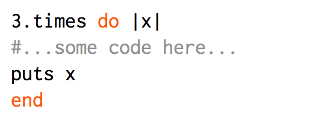
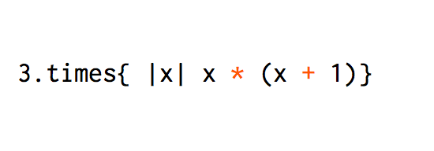
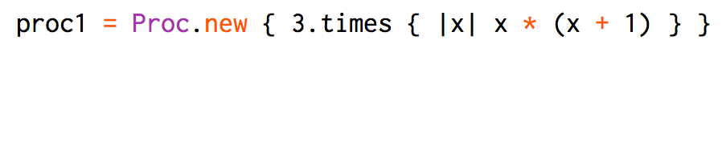
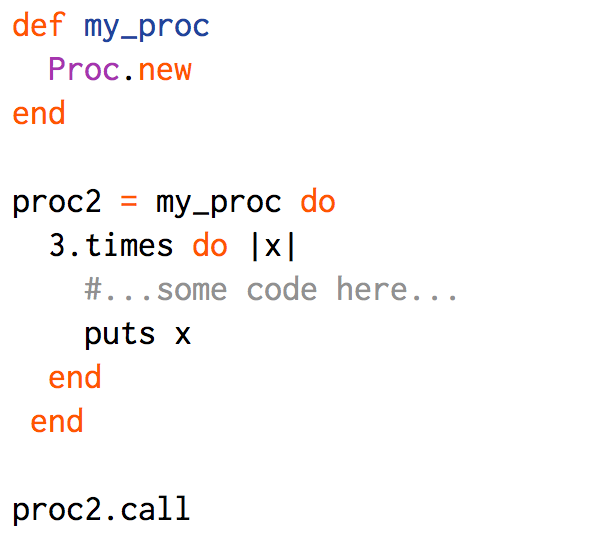

Lambda, Lambda, Lambda
Tuesday June 23, 2015
Desipte the title, this post is not about the movie Revenge of the nerds, it's not about Half-life and it has almost nothing to do with the 11th letter in the greek alphabet with numerical value is 30 for those things google has you covered. This is about the programming object Lambda. A lambda is a Proc, and a Proc is a Block but even though one thing is another it doesn't mean they are all the same thing.
The Block
A Block is an arbitrary set of operations
- 
- 
bothe are examples of block syntax
The Proc
A Proc is a Procedure, an Object in ruby, that you pass a block into.
- 
- 
The biggest difference between a Block and and Proc is that a block is not as a local variable and therefor cannot be pasted into other methods as arguments or parameters. However a Proc object, since it is in fact and object, can be passed into methods.
Lambda, Lambda, Lambda
A Lambda as you can probable guess is a type of Proc. all the same syntax is except of course you replace Proc.new with lambda.
lambda's enforce arity. so if the block expects to have n number of arguments, then when you call an object of this type you need to have n number of arguments or the program will crash. In this way it is more like a method call then a Proc. A Proc object although it suports arity, if not give the right number of arguments will simple subsitute them with nil.
lambda's also relinquish control back to the object from which they were called, something Proc objects do not allow. What this means is that you can call 2 lambda's, with return values, in sequence and they will both get run where as if you tried to do this with a proc that had a return value only the first Proc object would run and the second would get jumped over.
TL;DR